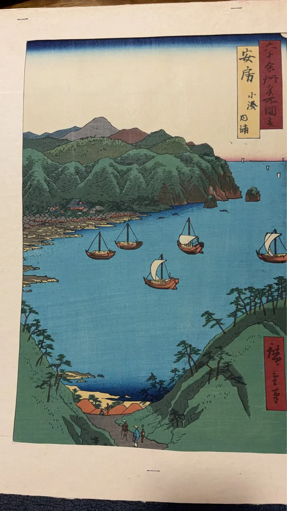

読みもの
歌川広重《六十余州名所図会 安房 小湊内浦》を読む ――海を望む安房・小湊の風景
歌川広重「六十余州名所図会」の一図《安房 小湊内浦》を入口に、 房総の海辺とシリーズの背景をたどります。
お知らせ一覧へ戻る
江戸時代を代表する浮世絵師、歌川広重。
広重は東海道や江戸だけでなく、日本各地の名所を「六十余州名所図会」という揃物にも描きました。
その一図が、《安房 小湊内浦》です。
現在の千葉県鴨川市にあたる小湊・内浦の海辺を題材とした作品で、館山市立博物館所蔵品は嘉永6年（1853）の作品として文化遺産オンラインに登録されています。
本稿では《安房 小湊内浦》を入口に、広重が描いた房総の海辺と「六十余州名所図会」というシリーズを見ていきます。
《安房 小湊内浦》とは
《安房 小湊内浦》は、初代歌川広重による「六十余州名所図会」の一図です。
文化遺産オンラインには館山市立博物館所蔵品が登録されており、作者を歌川広重、制作年を嘉永6年（1853）としています。
静岡市東海道広重美術館の展覧会資料では、さらに嘉永6年8月、版元は越村屋平助、大判錦絵竪と記録されています。
ここでいう「安房」は、かつての安房国です。
作品の「小湊」「内浦」は現在の千葉県鴨川市周辺にあたり、千葉県立安房博物館の資料では、鴨川市の内浦海岸を描いた作品と説明されています。
「六十余州名所図会」と房総
「六十余州名所図会」は、広重が日本各地の名所を縦長の画面に描いたシリーズです。
前回紹介した《対馬 海岸夕晴》も、同じシリーズに含まれます。
日本各地を一国一図を基本としてたどるこのシリーズでは、遠く離れた土地の海、山、川、町などが次々と登場します。
《安房 小湊内浦》では、その中から房総半島の海辺が選ばれました。
一つのシリーズの中で対馬と安房を見比べると、同じ「海」を含む景観でも、それぞれの土地が異なる構図で描かれていることに気づきます。
画面から見る《安房 小湊内浦》
作品では、高い位置から海辺を見渡すような広がりのある景観が描かれています。
手前から遠方へ視線を移していくことで、陸地と海、その向こうに続く景色を一つの縦長画面の中で眺めることができます。
広重の名所絵を見る際には、「実際の景色と完全に同じか」ということだけではなく、どこを手前に置き、どこまで遠景を見せているかにも注目できます。
地形や建物、海を組み合わせながら、その土地を印象づける風景として構成しているからです。
内浦海岸
千葉県立安房博物館の企画展資料は、本作について「鴨川市の内浦海岸を描いたもの」と説明しています。
現在の鴨川市の文化財保存活用地域計画でも、本作は「歌川広重が描いた内浦からの眺望」の一つとして挙げられています。
江戸時代の浮世絵と現在の土地を結びつけて考えられることも、名所絵を見る楽しみの一つです。
画中に見える誕生寺
千葉県立安房博物館の資料では、画面に小湊山誕生寺が見えると解説されています。
このような具体的な場所を知ると、《安房 小湊内浦》は単に「どこかの美しい海」を描いた作品ではなく、実際の土地と結びついた名所絵であることがより分かりやすくなります。
ただし、画中の細部について、資料で確認できない建物や船などを特定して解釈することは避ける必要があります。
海を描いた二つの名所
時継舎には、同じ「六十余州名所図会」の《対馬 海岸夕晴》も掲載しています。
対馬と安房。
二つの作品には海が登場しますが、その土地も、画面の構成も異なります。
一枚ずつ鑑賞するだけでなく、同じシリーズの作品を並べて見ることで、広重が各地の景観をどのように一枚の名所絵として組み立てたのかを比較できます。
時継舎掲載の《安房 小湊内浦》について
時継舎では、《六十余州名所図会 安房 小湊内浦》の一枚を掲載しています。
ここで注意したいのは、作品一般について確認できる制作年代と、時継舎に掲載している一枚の個体情報は別であるという点です。
館山市立博物館などが所蔵する《安房 小湊内浦》については1853年という制作情報を確認できますが、それだけを根拠として、時継舎掲載個体そのものが1853年に摺られたと判断することはできません。
版画には、摺りの時期、版の状態、紙、色彩、保存状態などによる個体差があります。
そのため時継舎では、十分な確認ができていない段階で、真作・初摺・江戸期オリジナル・後摺・復刻版などを断定する表記は行いません。
追加調査によって確認できた事項があれば、作品ページの情報を更新していきます。
対馬から安房へ
《対馬 海岸夕晴》と《安房 小湊内浦》。
二つは離れた土地を描いていますが、どちらも「六十余州名所図会」という一つのシリーズにつながっています。
一枚の作品について調べ、その次に別の国の一枚を見る。
そうして作品同士をつないでいくと、「六十余州名所図会」は日本各地をめぐる一つの大きな作品群として見えてきます。
時継舎でも、掲載している一枚一枚だけでなく、その背景にある土地、時代、シリーズとのつながりを紹介していきます。